Poddar Jämför skärmbilder Källsida ↗ Visningsläge Dator Mobil Senaste · 27 november 2026 kl. 12:01:401440 × 6770 px 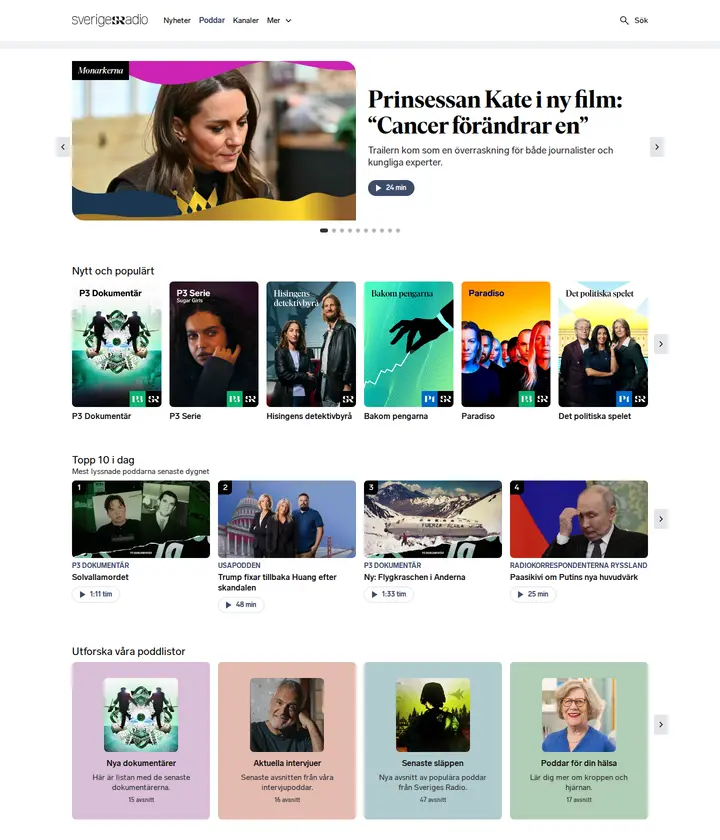 26 november 2026 kl. 14:23:021440 × 6770 px 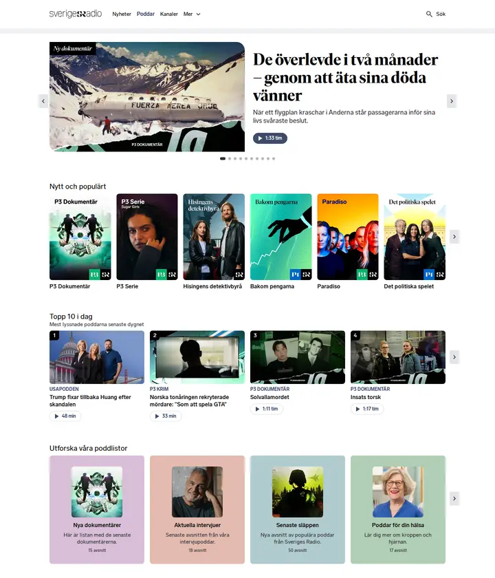 24 november 2026 kl. 12:02:311440 × 6770 px 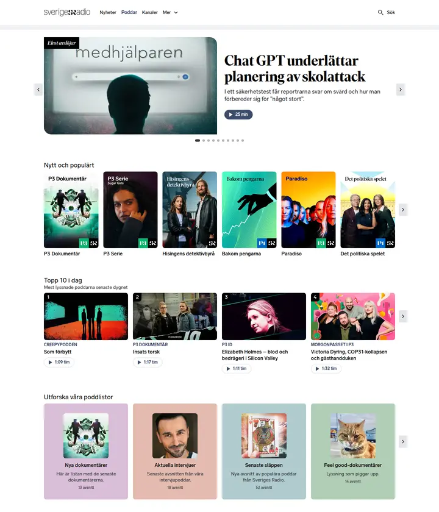 23 november 2026 kl. 12:02:361440 × 6770 px 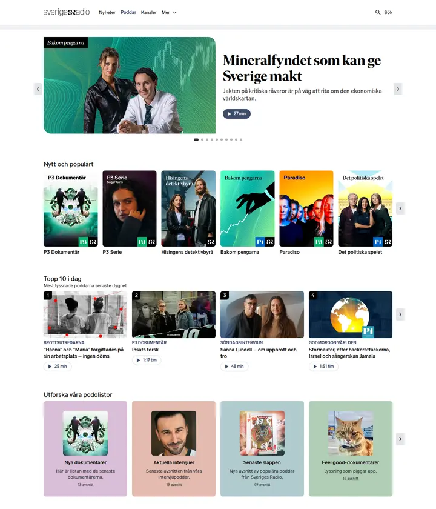 22 november 2026 kl. 12:02:301440 × 6770 px 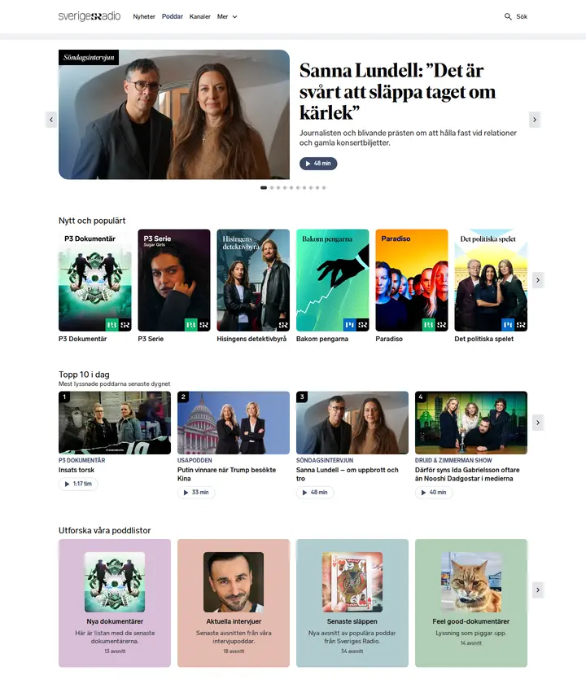 21 november 2026 kl. 12:40:221440 × 6770 px 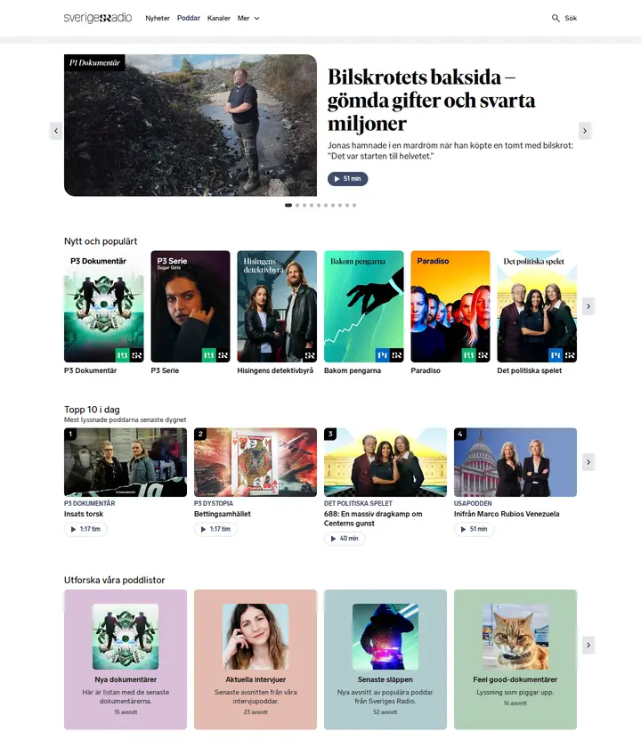 20 november 2026 kl. 12:02:271440 × 6770 px Senaste · 27 november 2026 kl. 12:01:50390 × 7634 px 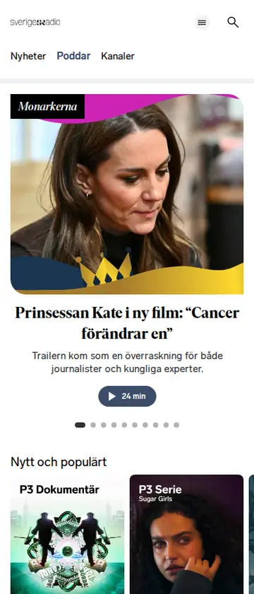 26 november 2026 kl. 14:23:12390 × 7620 px 24 november 2026 kl. 12:02:41390 × 7620 px 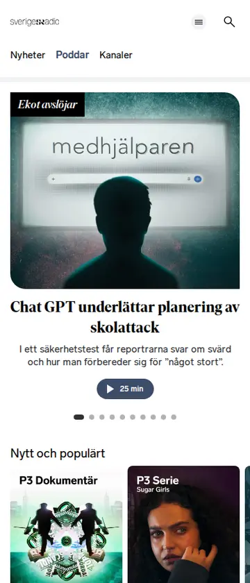 23 november 2026 kl. 12:02:46390 × 7612 px 22 november 2026 kl. 12:02:39390 × 7612 px 21 november 2026 kl. 12:40:32390 × 7606 px 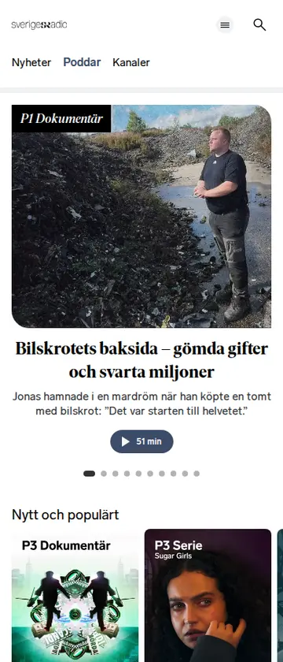 20 november 2026 kl. 12:02:38390 × 7606 px
Barn Jämför skärmbilder Källsida ↗ Visningsläge Dator Mobil Senaste · 27 november 2026 kl. 12:02:001440 × 8301 px 26 november 2026 kl. 14:23:211440 × 8301 px 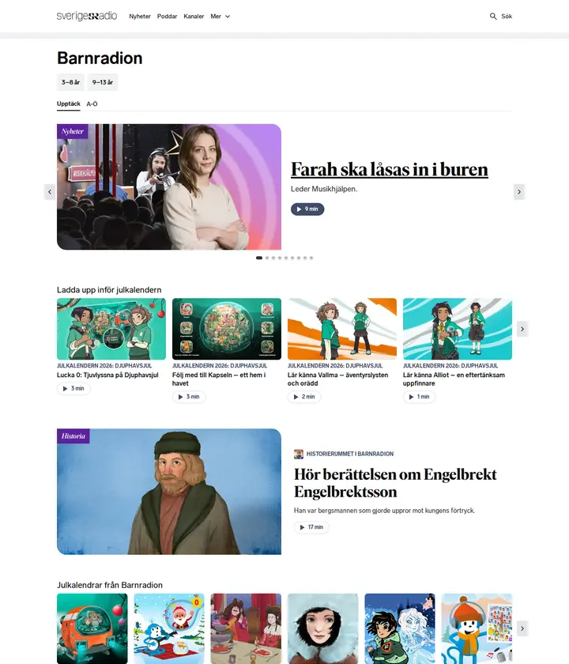 24 november 2026 kl. 12:02:511440 × 8290 px 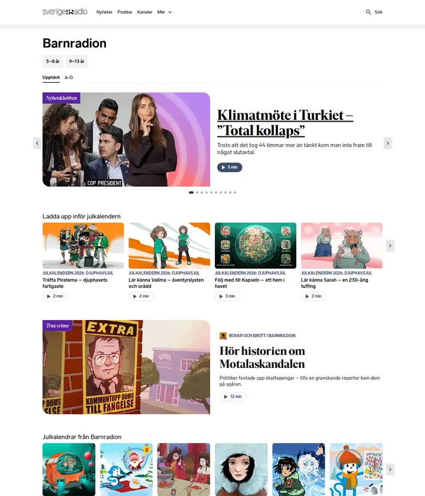 23 november 2026 kl. 12:02:561440 × 8290 px 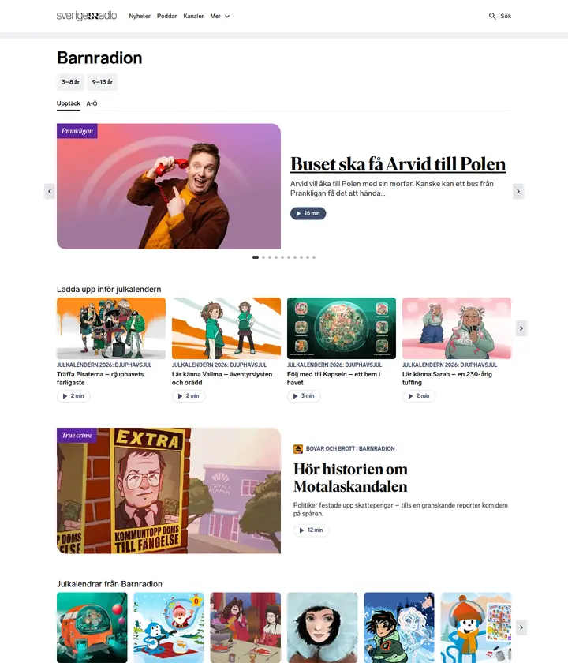 22 november 2026 kl. 12:02:491440 × 8290 px 21 november 2026 kl. 12:40:411440 × 8290 px 20 november 2026 kl. 12:02:481440 × 8290 px Senaste · 27 november 2026 kl. 12:02:12390 × 9008 px 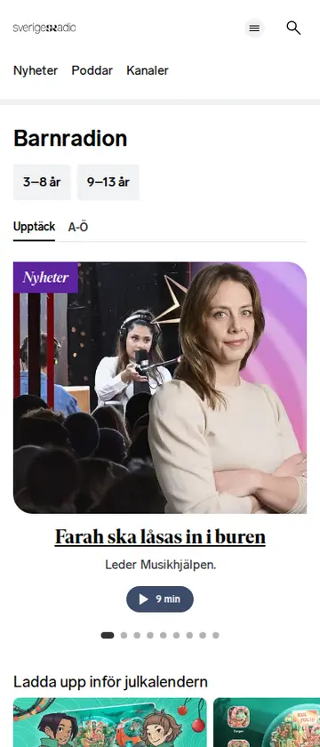 26 november 2026 kl. 14:23:32390 × 9008 px 24 november 2026 kl. 12:03:04390 × 8956 px 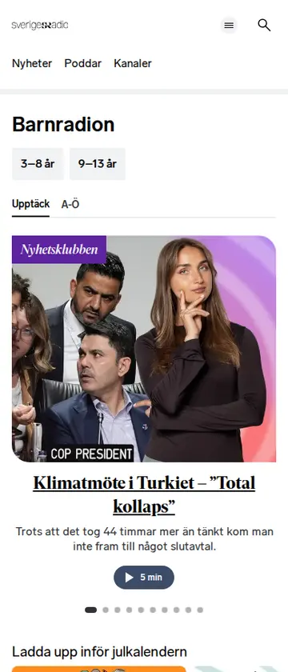 23 november 2026 kl. 12:03:08390 × 8924 px 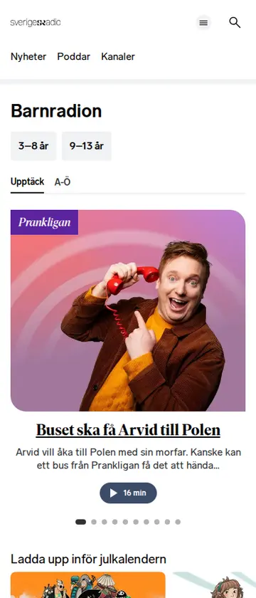 22 november 2026 kl. 12:03:00390 × 8924 px 21 november 2026 kl. 12:40:53390 × 8924 px 20 november 2026 kl. 12:02:59390 × 8924 px
Barn 3-8 år Jämför skärmbilder Källsida ↗ Visningsläge Dator Mobil Senaste · 27 november 2026 kl. 12:02:211440 × 7252 px 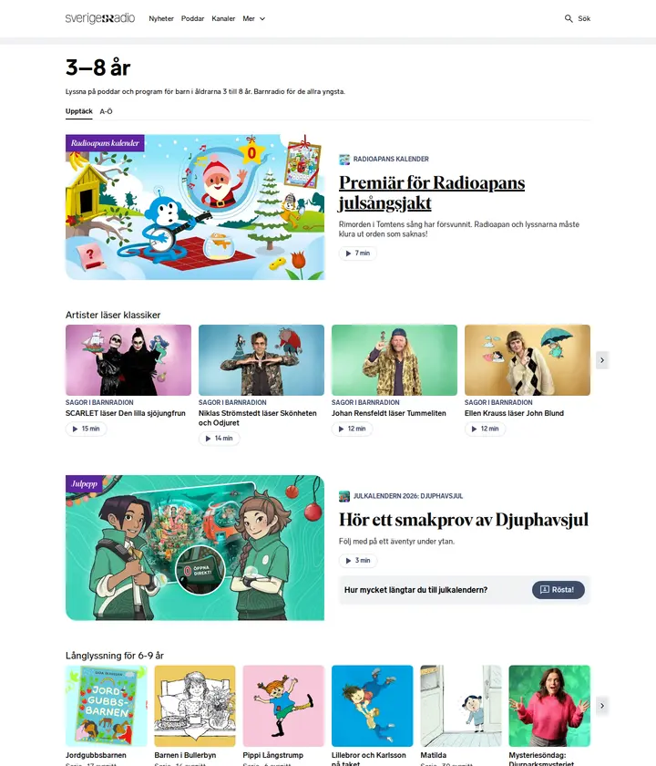 26 november 2026 kl. 14:23:411440 × 7236 px 24 november 2026 kl. 12:03:131440 × 7272 px 23 november 2026 kl. 12:03:181440 × 7272 px 22 november 2026 kl. 12:03:101440 × 7272 px 21 november 2026 kl. 12:41:021440 × 7272 px 20 november 2026 kl. 12:03:091440 × 7272 px Senaste · 27 november 2026 kl. 12:02:33390 × 7980 px 26 november 2026 kl. 14:23:50390 × 8022 px 24 november 2026 kl. 12:03:24390 × 7970 px 23 november 2026 kl. 12:03:29390 × 7970 px 22 november 2026 kl. 12:03:20390 × 7970 px 21 november 2026 kl. 12:41:12390 × 7970 px 20 november 2026 kl. 12:03:21390 × 7970 px
Barn 9-13 år Jämför skärmbilder Källsida ↗ Visningsläge Dator Mobil Senaste · 27 november 2026 kl. 12:02:411440 × 6024 px 26 november 2026 kl. 14:23:581440 × 6024 px 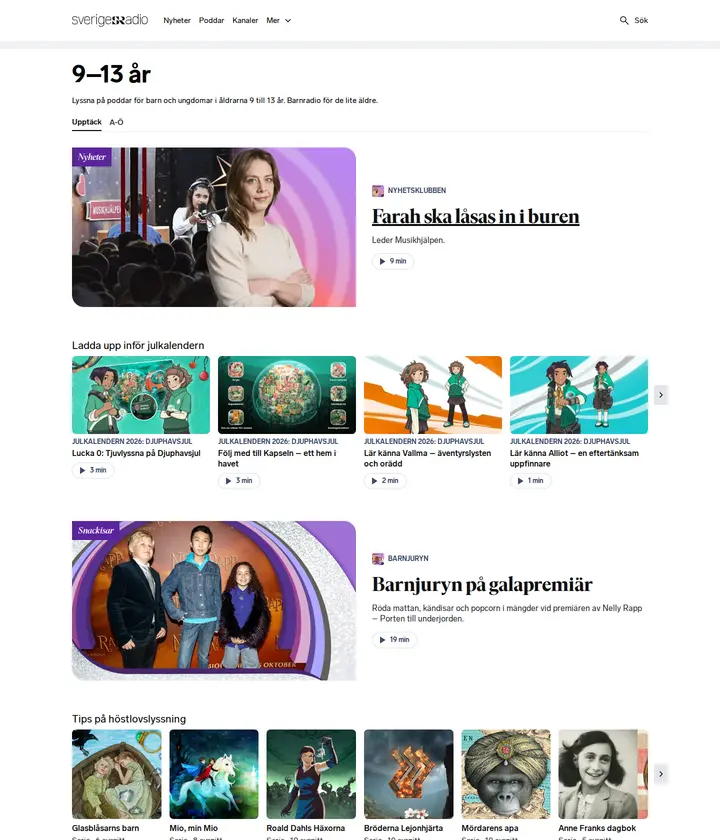 24 november 2026 kl. 12:03:321440 × 6024 px 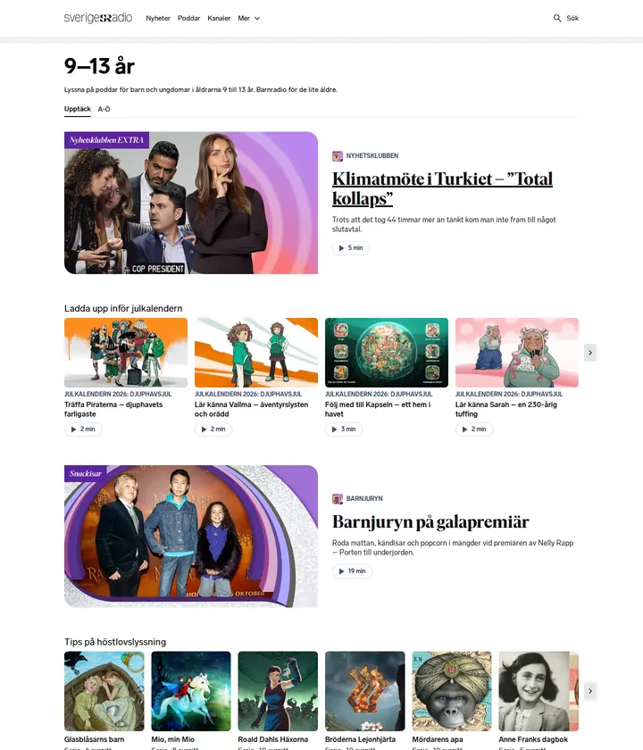 23 november 2026 kl. 12:03:381440 × 6024 px 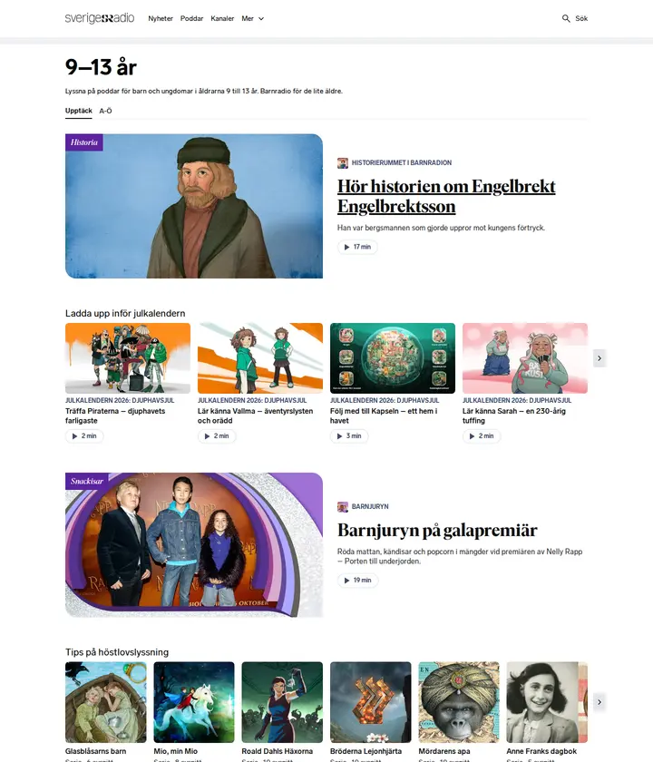 22 november 2026 kl. 12:03:281440 × 6045 px 21 november 2026 kl. 12:41:211440 × 6045 px 20 november 2026 kl. 12:03:291440 × 6045 px Senaste · 27 november 2026 kl. 12:02:50390 × 6513 px 26 november 2026 kl. 14:24:06390 × 6513 px 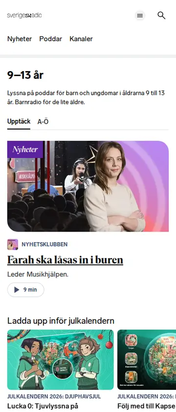 24 november 2026 kl. 12:03:42390 × 6561 px 23 november 2026 kl. 12:03:49390 × 6561 px 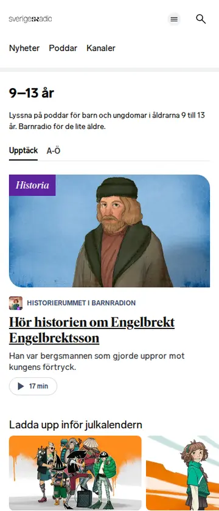 22 november 2026 kl. 12:03:36390 × 6581 px 21 november 2026 kl. 12:41:29390 × 6581 px 20 november 2026 kl. 12:03:38390 × 6581 px